Guida installatore
Ho scritto questa guida per chi installa con CDA Net: trovi un'installazione dall'inizio alla fine con l'app CDA Net CPE e tutti gli strumenti che ti servono sul tetto e in ufficio.
L'ho divisa nell'ordine in cui lavori: prima di partire, l'installazione passo per passo, cosa succede dopo e gli strumenti. Se è la prima volta, leggi i capitoli 1–4; il resto consultalo quando ti serve. Dal telefono tocca Indice in alto per saltare a un capitolo.
1. Prima di partire
- Telefono Android con l'app CDA Net CPE. Si aggiorna da sola: quando esce una versione nuova va installata prima di lavorare.
- Il tuo account (utente e password) che ti ho dato io o l'ufficio. Vedi solo le tue installazioni e i POP/AP della tua zona.
- Internet sul telefono almeno una volta prima di andare dal cliente: l'app si scarica gli interventi del giorno e prepara le configurazioni. Sul tetto puoi lavorare anche senza rete.
- La CPE nuova (o resettata), con l'etichetta di MAC e seriale leggibile, alimentatore PoE e cavo. Se il tuo account è collegato a un magazzino, la CPE deve essere una delle tue.
- I dati del cliente: utente e password PPPoE e l'indirizzo. Per gli interventi assegnati dall'ufficio li trovi già nell'app e la password non la vedi nemmeno: la mette il server.
2. Primo avvio e accesso
Al primo accesso l'app ti mostra l'informativa privacy: leggila, spunta la casella e tocca Accetto. L'accettazione resta registrata con data, ora e telefono; l'attestazione la scarichi da Il mio account nella console. Se l'informativa cambia, te la ripropone.
Poi l'app controlla il telefono (Prepara il telefono): posizione, GPS attivo, notifiche, fotocamera e dispositivi Wi-Fi vicini, con un pulsante per sistemare ognuno. Ti consiglio di togliere anche le limitazioni della batteria, così promemoria e notifiche arrivano in orario ad app chiusa.
Nella schermata di accesso scrivi utente e password e tocca Accedi. L'indirizzo del server è già impostato: cambialo con Modifica URL solo se te lo chiedo io. Verifica collegamento controlla che il server risponda.
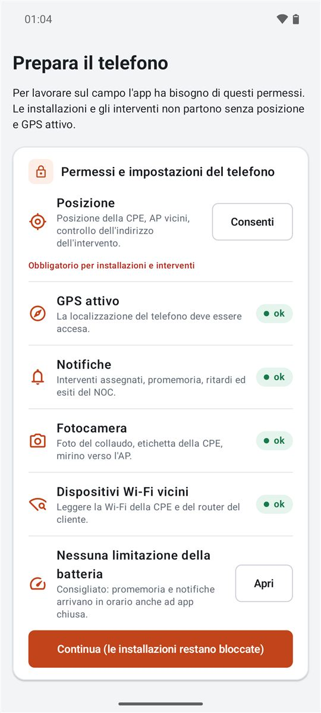
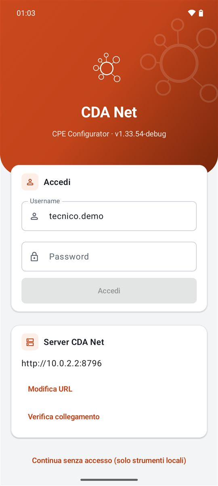
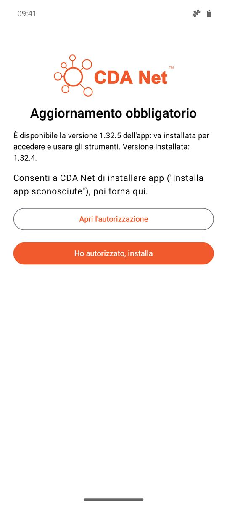
Resti collegato
Dopo il primo accesso con la password l'app resta collegata: le volte dopo si apre direttamente. La sessione si rinnova a ogni apertura e scade solo se non usi l'app per 30 giorni. La password te la richiede se la cambi, se tocchi Esci, se reinstalli l'app o se disattivo l'account. La password non viene mai salvata sul telefono.
Se vuoi più sicurezza, in Impostazioni attiva Sblocco con impronta o volto a ogni apertura.
Aggiornamento obbligatorio
Quando pubblico una versione nuova dell'app, quella vecchia non fa più accedere: compare Aggiornamento obbligatorio e il download parte da solo. La prima volta Android chiede di consentire l'installazione da questa origine: tocca Apri l'autorizzazione, attiva l'interruttore, torna indietro e tocca Ho autorizzato, installa.
Screenshot
Di regola nell'app gli screenshot e la registrazione dello schermo sono disattivati: l'immagine esce nera. Se ti serve farne per lavoro, chiedimelo e li attivo sul tuo account. Ogni tentativo da un account senza permesso mi arriva come notifica.
3. La schermata principale
In basso c'è la barra con le cinque aree, sempre a portata di pollice:
- Oggi: la schermata principale;
- Installa: le tue installazioni (da completare, storico, stato delle CPE);
- Copertura: un indirizzo è coperto? Da usare prima del sopralluogo;
- Rete: stato della rete, guasti Enel, aree di interesse e AP vicini;
- Strumenti: CPE collegata, strumenti di rete e questa guida.
In Oggi, in alto, c'è il riquadro arancione con il tuo nome e i due interventi più frequenti: Nuova installazione e Ripuntamento o cambio AP. Se hai lasciato un intervento a metà compare Riprendi l'intervento. Sotto trovi gli interventi di oggi, i contatori (da completare, notifiche, guasti nelle tue zone, CPE con problemi: toccane uno per aprirlo) e le tue scorciatoie.
Le scorciatoie le scegli tu: tocca Modifica accanto a Scorciatoie, con + ne aggiungi una (ci sono tutte le funzioni dell'app, compreso il Calendario), con le frecce le riordini, con − le togli. Ripristina predefinite torna a quelle iniziali. Seguono il tuo account: le ritrovi su ogni telefono da cui accedi.
In alto a destra, in ogni schermata: la lente cerca un cliente, un MAC o un SSID tra le tue installazioni e le tue CPE; la campanella apre le Notifiche; l'ingranaggio le Impostazioni.
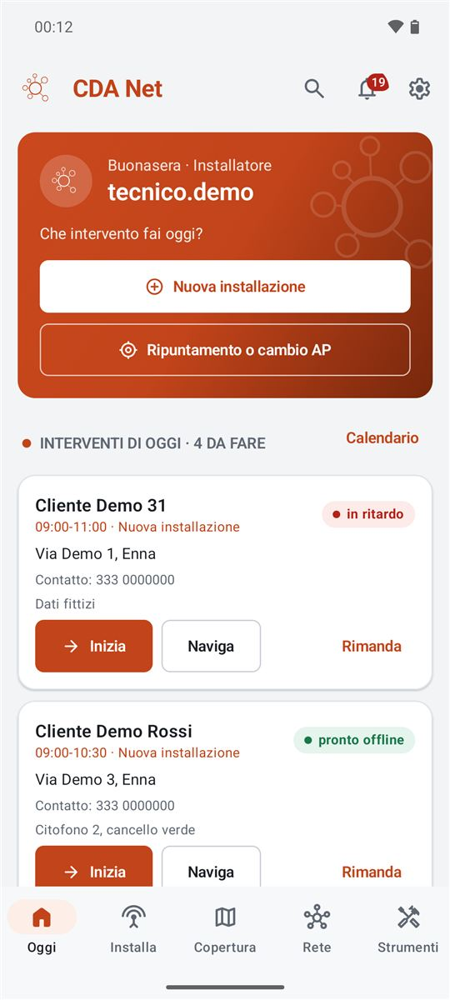
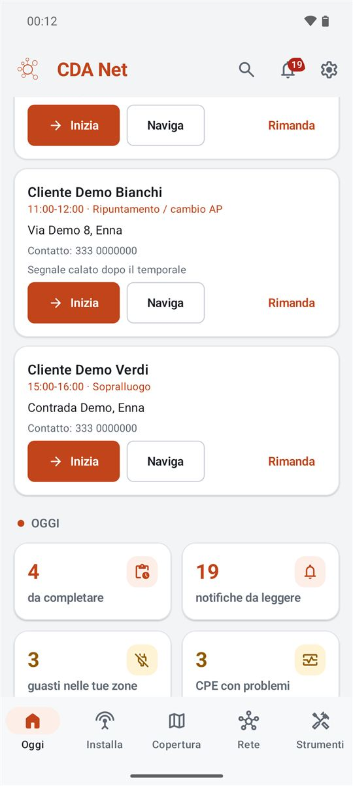
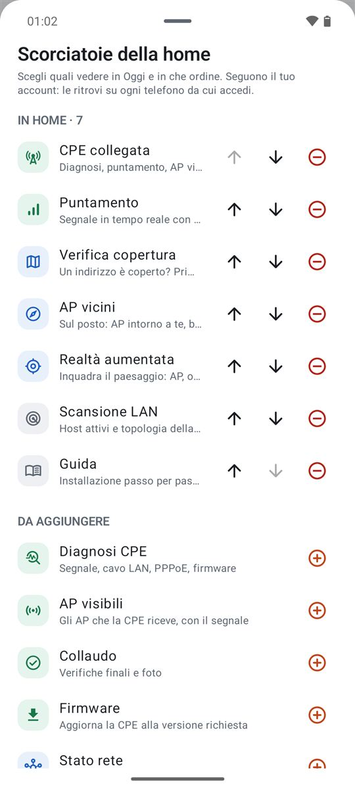
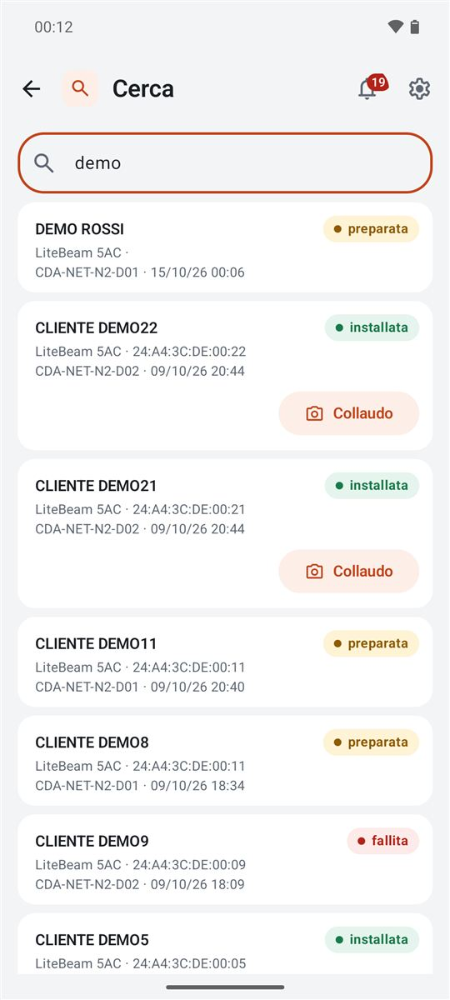
Interventi di oggi
Gli interventi che l'ufficio ti assegna per oggi compaiono in Oggi con cliente, fascia oraria, tipo (nuova installazione, ripuntamento, guasto, sopralluogo), indirizzo, contatto e note:
- Inizia: per una nuova installazione apre il passo 1 con cliente, posizione, modello e utente PPPoE già compilati;
- Naviga: apre il navigatore verso l'indirizzo;
- Rimanda: scrivi il motivo (per esempio cliente assente) e l'ufficio lo vede subito.
Quando apri l'app con Internet, per ogni nuova installazione del giorno l'app prepara da sola la configurazione e sull'intervento compare pronto offline: vuol dire che sul tetto puoi scriverla anche senza rete (vedi Sul tetto senza rete).
Notifiche, anche ad app chiusa: ti avvisano quando ti viene assegnato un intervento o ne cambiano giorno e orario, e te lo ricordano 24 ore, 2 ore, 1 ora e 30 minuti prima. Se mezz'ora dopo l'orario non l'hai iniziato ti avvisano che è in ritardo; se il giorno passa senza esito, che non è stato fatto. In tutti e due i casi lo sa anche l'ufficio.
Collaudo all'indirizzo giusto: per un intervento dell'ufficio il collaudo si salva solo se sei entro 500 metri dal cliente. Se sei più lontano l'app lo blocca e ti dice la distanza: controlla di essere dal cliente giusto o fai correggere l'indirizzo all'ufficio.
Quando l'installazione riesce, l'intervento si chiude da solo. Con Internet l'app scarica in anticipo anche gli AP intorno a ogni indirizzo, così AP vicini funziona pure su un tetto senza segnale.
Il calendario
Accanto a Interventi di oggi tocca Calendario (o aggiungilo alle scorciatoie). È come il calendario del telefono: Giorno, Settimana e Mese, con le frecce per spostarti e Oggi per tornare a oggi. Ogni intervento è un blocco sulla sua fascia oraria, colorato per tipo: arancio nuova installazione, blu ripuntamento, giallo riparazione, verde sopralluogo. Quelli già fatti sono sbiaditi, quelli in ritardo hanno il bordo rosso, quelli senza orario stanno in una riga sopra le ore. Nel mese ogni giorno ha un pallino per intervento: tocca un giorno per vedere l'elenco.
Tocca un intervento per i dettagli (indirizzo, contatto, CPE, note) con Naviga e, nel suo giorno, Inizia. Il calendario lo prepara l'ufficio: tu lo consulti.
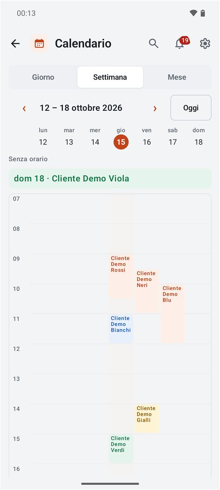
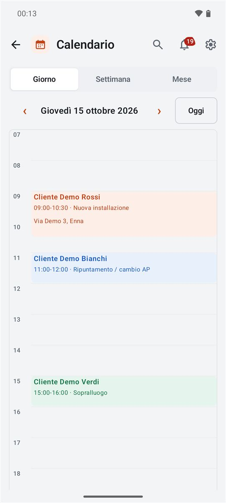
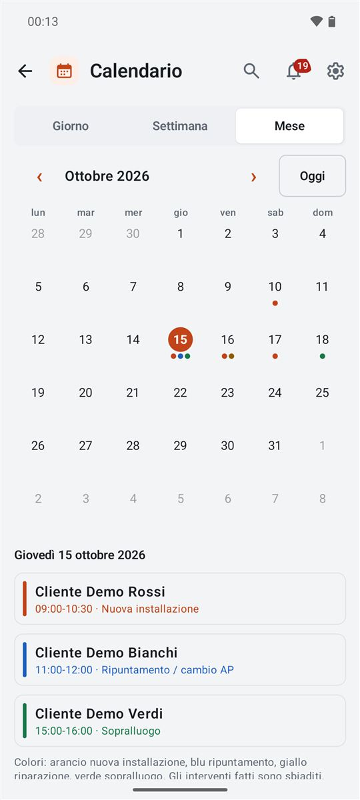
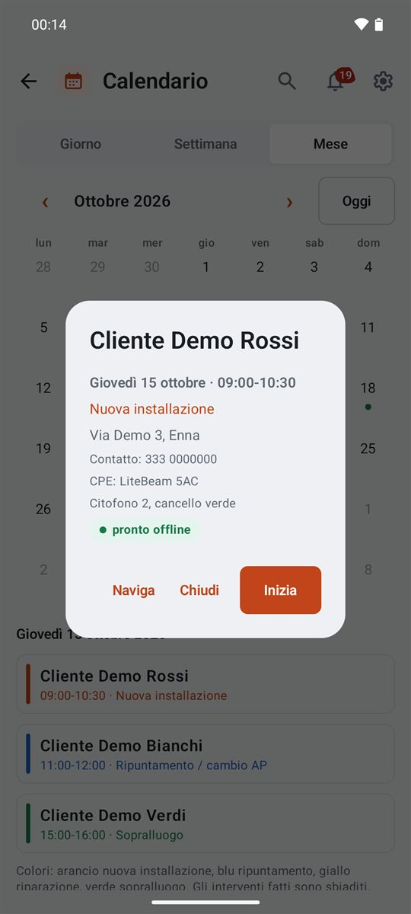
4. Nuova installazione passo per passo
Facciamo insieme l'installazione di una LiteBeam 5AC per un cliente di prova. Da Oggi tocca Inizia sull'intervento, oppure Nuova installazione. In alto vedi sempre in che passo sei, con la barra di avanzamento; da lì hai anche Segnala KO (vedi più sotto) e Termina, che chiude l'intervento quando vuoi.
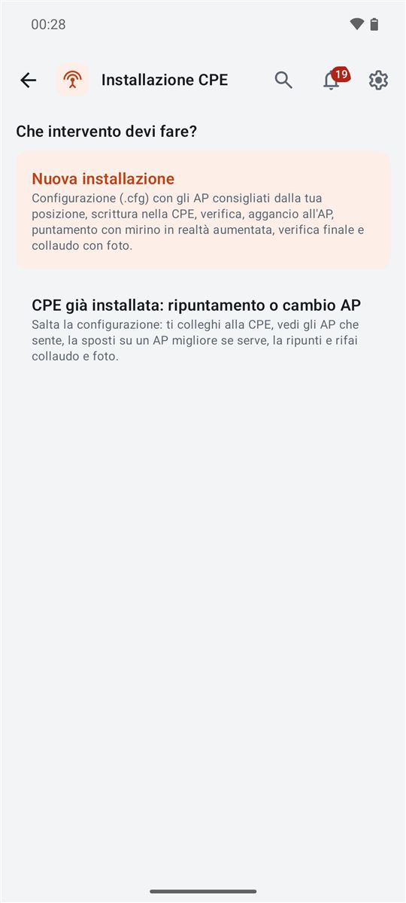
| Passo | Cosa fai | Internet |
|---|---|---|
| 1 · Configurazione | CPE, posizione, AP, PPPoE: il server prepara la configurazione | Sì, o già pronta |
| 2 · Scrittura nella CPE | Ti colleghi alla Wi-Fi della CPE e tocchi Installa sulla CPE | No |
| 3 · Verifica della CPE | Controllo automatico di quanto scritto | No |
| 4 · Aggancio all'AP | Gli AP che la CPE sente, e il migliore | No |
| 5 · Puntamento | Segnale in tempo reale, bip, realtà aumentata | No |
| 6 · Verifica finale e collaudo | Controlli, misure, velocità, foto e note | Per l'invio |
Passo 1 · Configurazione
- La CPE. Se il tuo account è collegato a un magazzino, in Dal tuo magazzino scegli la CPE che stai montando: modello, MAC e seriale si compilano da soli, senza scansione e senza errori di battitura. Se non hai un magazzino (o puoi montare anche altre CPE) scegli il Modello e scansiona MAC e Seriale dall'etichetta con il tasto nel campo. Il MAC dell'etichetta è quello che la rete usa per riconoscere la CPE: prima di scrivere l'app controlla che sia proprio quello della CPE collegata.
- Posizione e AP consigliati: tocca Rileva posizione (GPS) nel punto dove monterai l'antenna, oppure cerca l'indirizzo. L'app propone gli AP consigliati da qui con distanza, direzione e segnale stimato; il primo è già scelto, con Usa ne prendi un altro. Con Visibilità controlli prima di salire se il terreno copre l'AP.
- Wireless Station: nodo, distretto ed eventuale rilancio si compilano dall'AP scelto (SSID del tipo
CDA-NET-N2-D01). - Router / PPPoE: utente e password del cliente; per gli interventi dell'ufficio la password non serve. Dall'utente l'app ricava il nome del dispositivo.
- Verifica piano ti fa vedere tutto quello che verrà scritto nella CPE. Poi tocca Prepara provisioning.
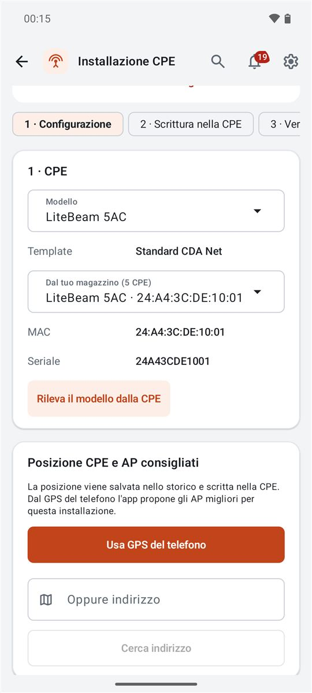
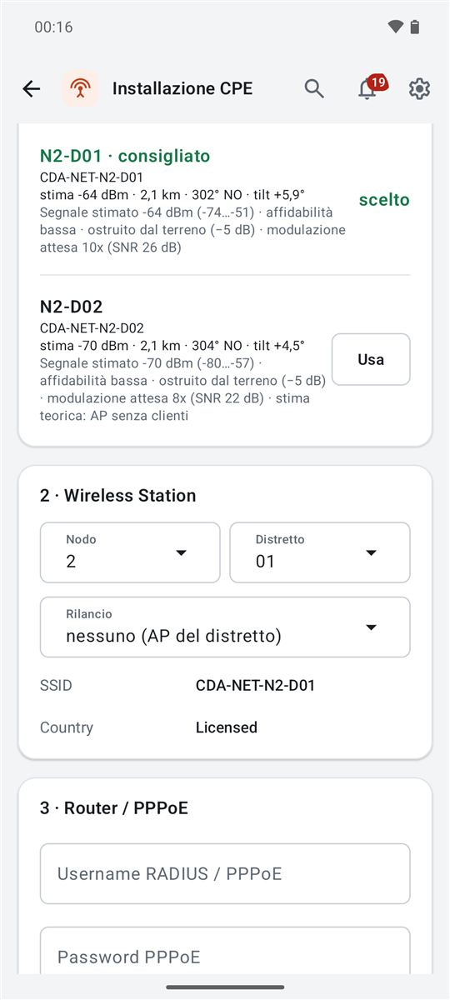
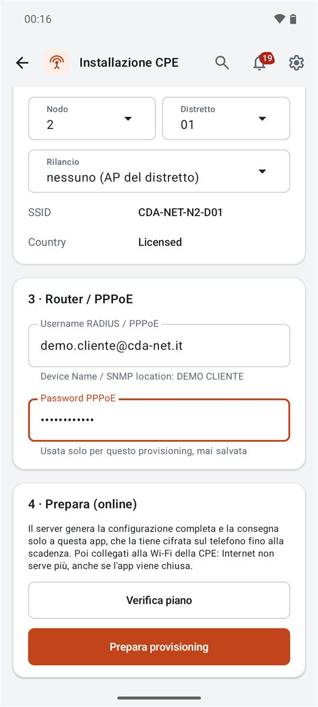
Passo 2 · Scrittura nella CPE
- Collegati alla Wi-Fi della CPE. Tocca Collegati alla Wi-Fi della CPE: Android ti mostra le CPE vicine (nome tipo
LBE-5AC-Gen2:…), tocchi la tua e sei dentro. Internet resta sulla rete mobile, quindi niente avvisi «rete senza Internet». Se preferisci, Altre reti Wi-Fi apre le impostazioni di Android come prima. - Installa sulla CPE: con un solo tocco l'app entra nella CPE, anche se è nuova o resettata (usa le credenziali di fabbrica e imposta le nostre), la porta al firmware richiesto se ne ha un altro, controlla modello e MAC, scrive la configurazione e la riavvia. Ogni fase compare con una spunta. Alla fine tocca Avanti: verifica della CPE.
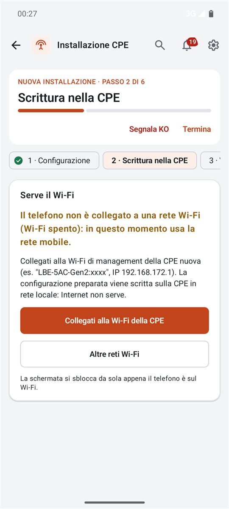
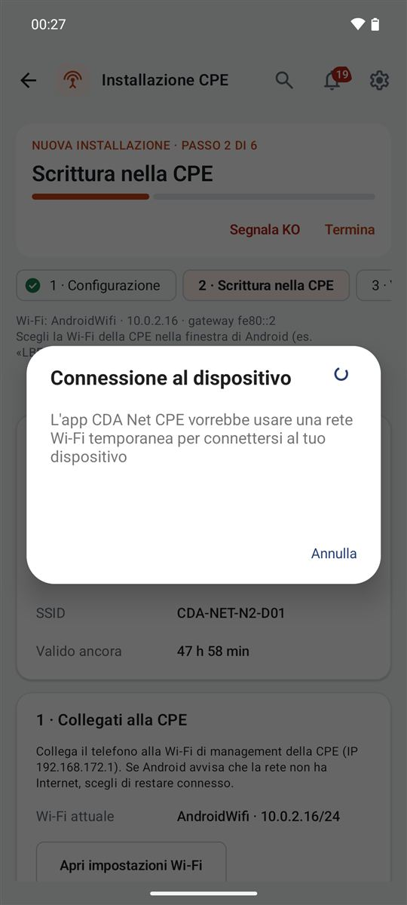
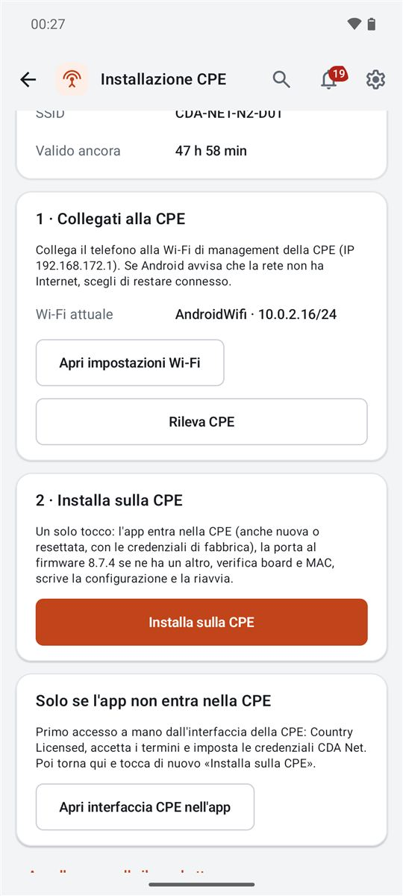
Sul tetto senza rete
Per gli interventi pronto offline il passo 1 l'ha già fatto l'app. Tocca Inizia anche senza rete e vai dritto alla scrittura:
- AP verso cui punti: l'app ha preparato la configurazione per l'AP migliore e per i successivi (fino a 5): scegli quello verso cui monti l'antenna.
- CPE di questo intervento: scegli la CPE dal tuo magazzino oppure scansiona MAC e seriale dall'etichetta, poi tocca Conferma la CPE.
- Collegati alla Wi-Fi della CPE e tocca Installa sulla CPE come sempre.
Esito, MAC, seriale e AP scelto partono da soli appena il telefono torna online.
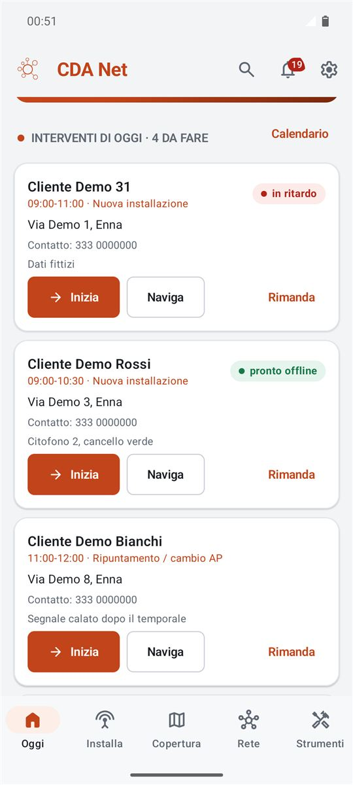
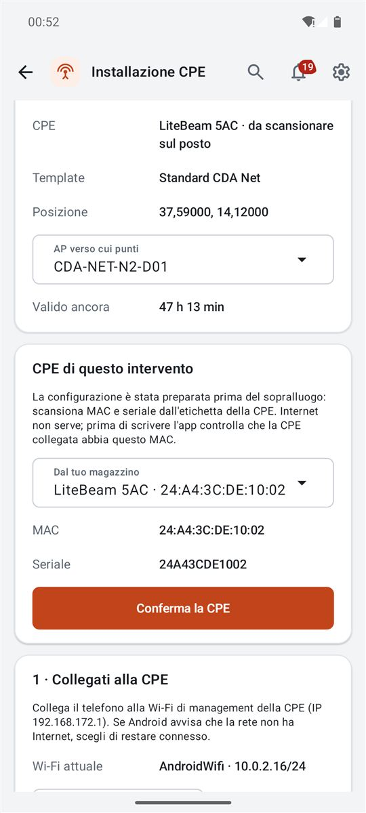
Passo 3 · Verifica della CPE
Dopo il riavvio (1-2 minuti) l'app ritrova da sola la CPE e mostra nome, modello, firmware, MAC e SSID configurato, con i dati dell'installazione. Se non la trova usa IP manuale; se la CPE non accetta le credenziali standard, Credenziali diverse (restano solo in memoria).
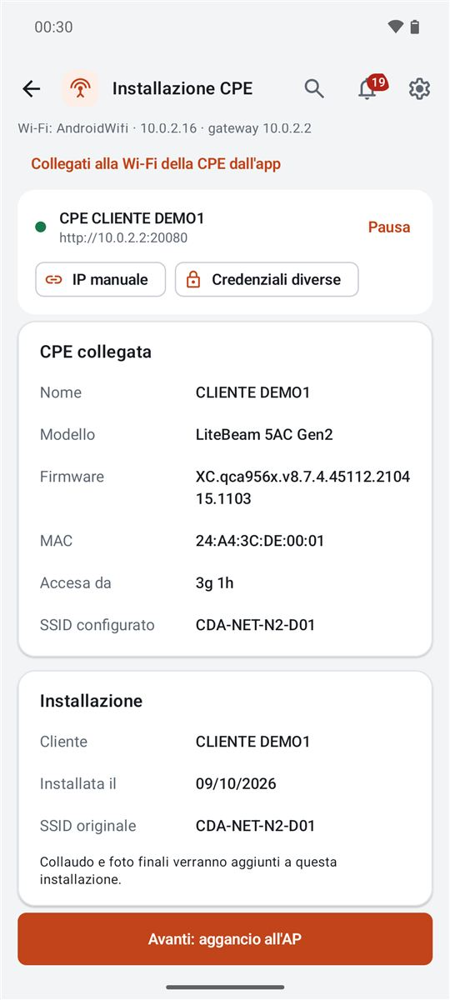
Passo 4 · Aggancio all'AP
Collegamento attuale mostra a quale AP è agganciata la CPE, con segnale, SNR e modulazione. Tocca Scansiona dalla CPE: è la radio della CPE a cercare gli AP, quindi la lista è quella che conta davvero. Durante la scansione il collegamento può interrompersi per qualche secondo.
Gli AP CDA Net sono in cima e il migliore è segnato consigliato. Per cambiare AP tocca Aggancia: la CPE passa al nuovo SSID con la sua chiave (te la dà il server, non devi conoscerla), salva e si riavvia. Con Blocca la CPE su questo AP resta su quell'AP anche se ne sente altri.
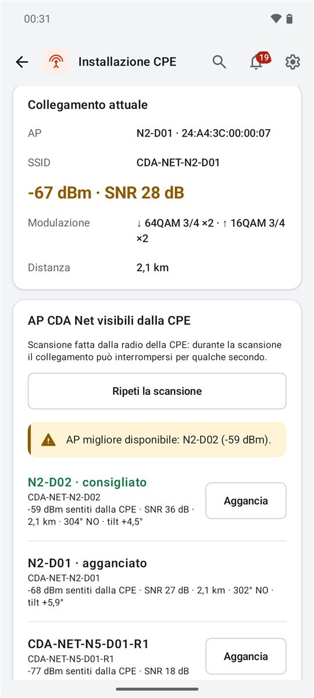
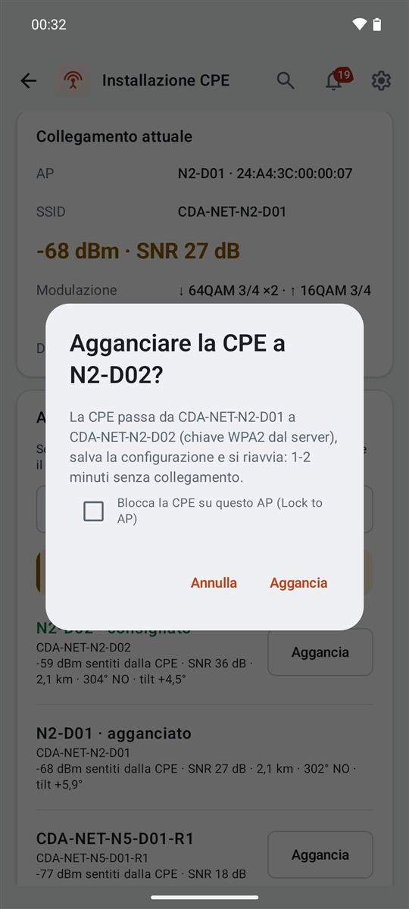
Passo 5 · Puntamento
Il numero grande è il segnale ricevuto dalla CPE, aggiornato di continuo, con il valore atteso e il picco raggiunto. Nel grafico la linea verde tratteggiata è la soglia «buono», quella rossa il minimo. Ruota piano l'antenna in orizzontale, poi in verticale, e fermati sul picco. Per lavorare con il telefono in tasca hai:
- Bip: il tono sale quando il segnale migliora;
- Voce: l'app legge il segnale ad alta voce (meno 58);
- Vibra al picco: vibra ogni volta che superi il picco.
Sotto trovi la direzione dell'AP (azimut, tilt, distanza) e i pulsanti per il Mirino in realtà aumentata, la Bussola verso l'AP, la Mappa e lista degli AP e il Puntamento a schermo intero. Lo schermo resta acceso finché lavori.
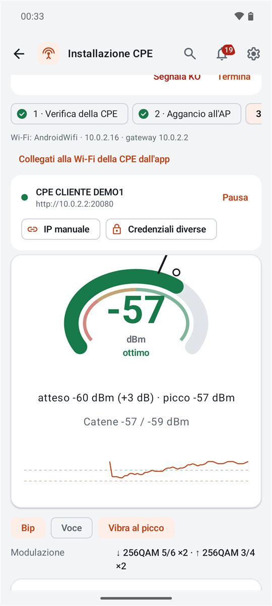
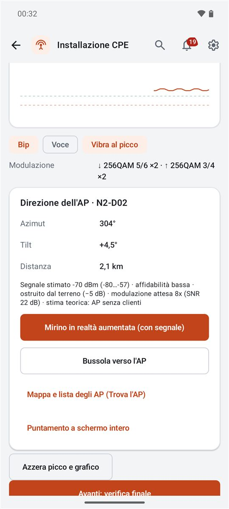
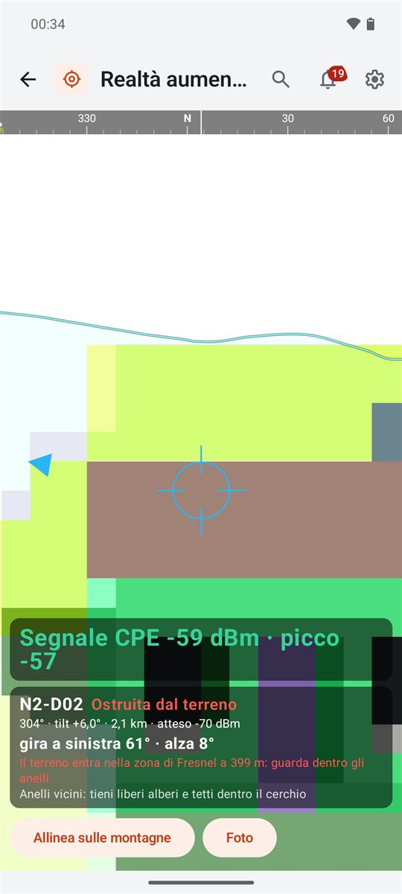
Realtà aumentata (dalla scorciatoia in Oggi, dal mirino o da Copertura): inquadri il paesaggio dal punto della CPE e vedi gli AP intorno con nome, distanza e segnale atteso, la linea azzurra dell'orizzonte calcolata dal terreno e gli anelli di Fresnel verso l'AP scelto, che devono restare liberi. Se un albero o un tetto entra negli anelli vicini, sposta o alza la CPE; se l'AP è sotto la linea azzurra, la collina lo copre. All'aperto usa Allinea sulle montagne per la massima precisione; da dentro casa, attraverso un vetro, bussola e orizzonte possono sbagliare di qualche grado.
Passo 6 · Verifica finale e collaudo
In alto vedi subito se l'installazione è nei parametri; sotto ci sono le misure radio e i controlli con spunta verde, avviso arancione o errore rosso, ognuno con cosa fare. A fine installazione il collaudo si apre da solo:
- Altezza della CPE dal suolo (in metri, es. 7,5): è obbligatoria e va nel verbale.
- Misure radio: Avvia misura fa 10 letture in 10 secondi e ne fa la media.
- Internet dal lato cliente: collega il telefono alla Wi-Fi del router del cliente e tocca Misura Internet.
- Foto (fino a 8): antenna, staffa o palo, cablaggio, router del cliente. Finiscono anche nel rapporto PDF che stampa il NOC.
- Note per il NOC, se servono.
- Salva e invia collaudo. L'esito (superato, con riserva, non superato) è calcolato con le soglie del NOC. Senza rete il collaudo resta in coda e parte da solo dopo.
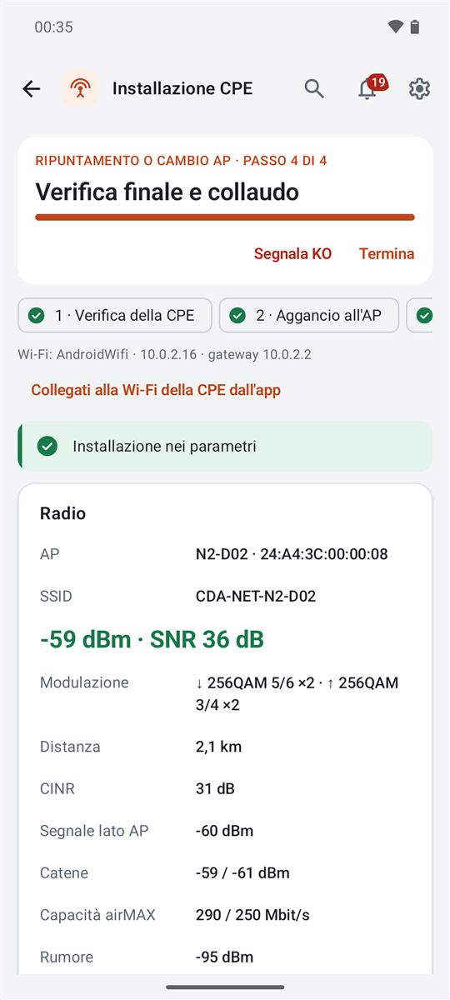
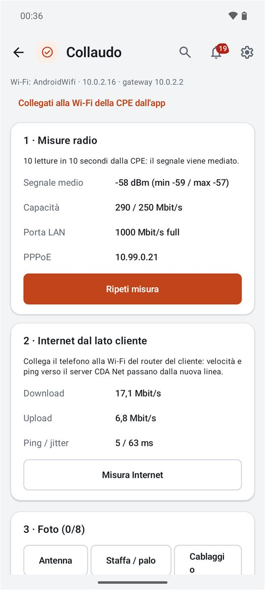
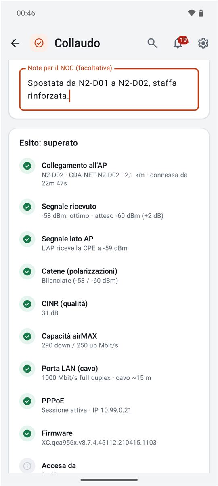
Con Fine intervento hai finito. Quando il collaudo è superato, il NOC sa che la CPE è pronta e la accetta in rete.
Segnale pessimo: se il segnale è sotto il minimo o un controllo radio è rosso, il collaudo si salva come sempre ma resta in attesa dell'approvazione del NOC. La decisione, con la nota, ti arriva nelle Notifiche; se è un rifiuto, ripunta o cambia AP e rifai il collaudo.
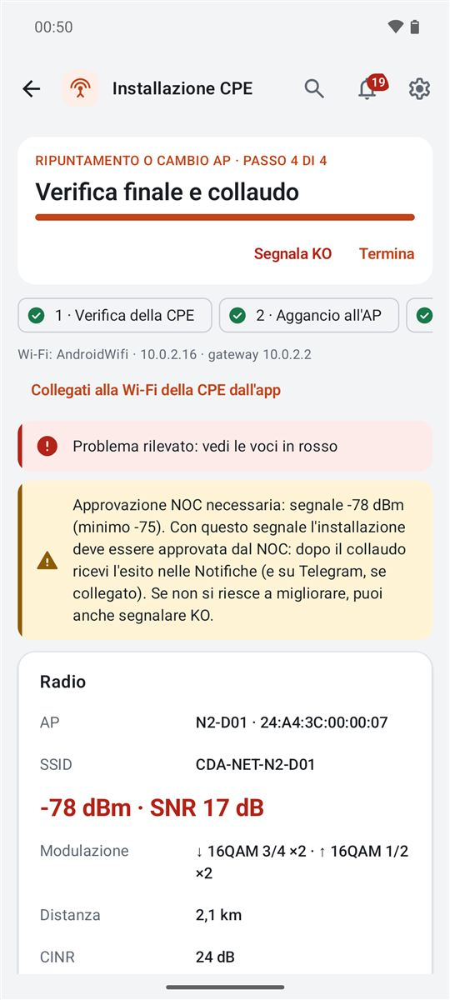
Se non si riesce: Segnala KO
In ogni passo, in alto, c'è Segnala KO:
- Rimandata: si riprova un altro giorno (maltempo, cliente assente, materiale mancante…), con il motivo e, se l'hai concordato, quando;
- KO definitivo: l'installazione non si può fare (nessun AP visibile, ostacoli…), sempre con il motivo.
Fase, SSID, segnale e MAC li allega l'app. Il NOC viene avvisato subito, e non si blocca nulla: puoi Riprovare ora o chiudere e tornare un altro giorno. Quando un tentativo successivo supera il collaudo, la segnalazione si chiude da sola.
Un'installazione fallita, o preparata e mai scritta, la riapri da Installa → Da completare con Modifica e riprova: ritrovi tutti i dati e correggi quello che serve (per esempio il MAC).
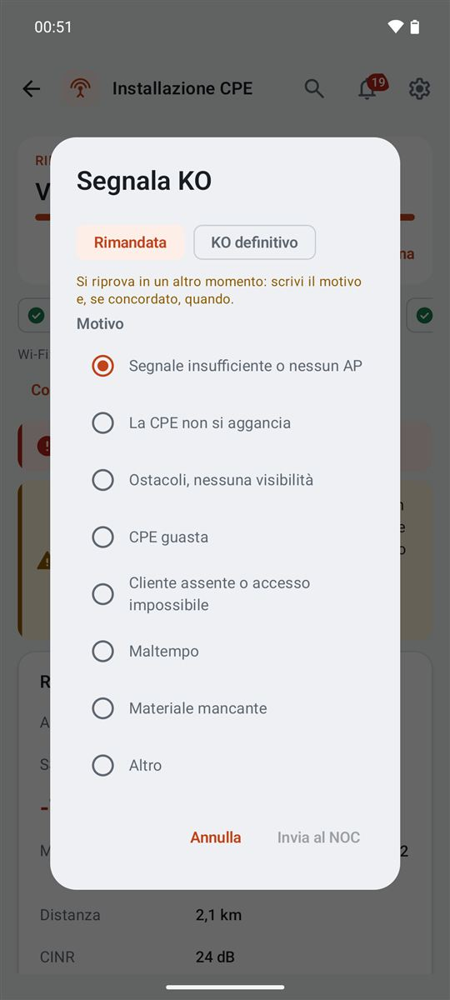
5. Ripuntamento, cambio AP, sostituzione
Ripuntamento o cambio AP salta configurazione e scrittura: ti colleghi alla Wi-Fi della CPE (anche con Collegati alla Wi-Fi della CPE) o a quella del router del cliente, l'app trova la CPE e riparti dalla verifica. Se la CPE l'avevi installata con l'app, collaudo e foto si aggiungono a quell'installazione.
Ci arrivi anche da Installa → Stato CPE, con Ripuntamento su una CPE il cui segnale è calato.
Sostituzione CPE (antenna guasta): dallo Storico apri l'installazione e tocca Sostituisci CPE. Parte una nuova installazione con i dati del cliente già compilati: inserisci la CPE nuova e prosegui dal passo 1.
6. Dopo l'installazione
Tutto è in Installa, con tre schede: Da completare (collaudo mancante, rifiutato dal NOC, scrittura fallita o mai fatta, con il pulsante per riprenderle), Storico e Stato CPE.
Storico: tutti i tuoi provisioning con esito, collaudo, rimandi o KO e decisione del NOC; da qui apri lo storico del segnale (7 giorni), il collaudo con le foto e Sostituisci CPE.
Stato CPE: le CPE che hai installato confrontate con il collaudo (offline, segnale debole, segnale calato di almeno 6 dB, porta LAN lenta), con ricerca e filtri. Tocca una CPE per dettagli, storico e ripuntamento.
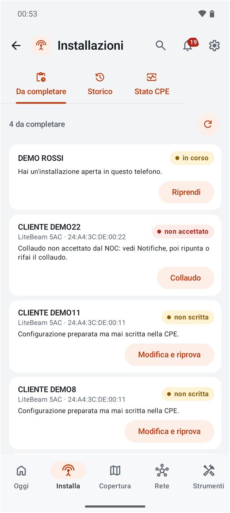
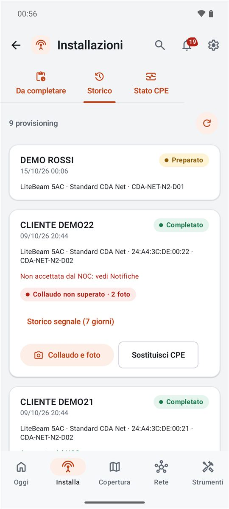
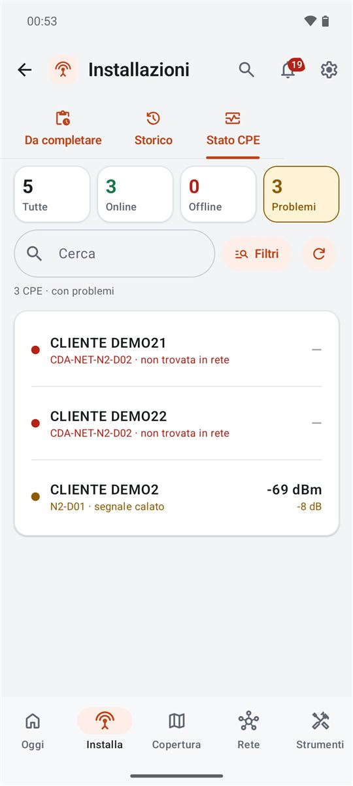
Notifiche
La campanella in alto mostra gli esiti delle tue installazioni (approvazione o rifiuto del NOC con la nota, attivazione in rete) e gli avvisi sugli interventi. Tocca una notifica per segnarla come letta; con il cestino la elimini, e in alto hai Elimina le lette ed Elimina tutte. Le notifiche si cancellano da sole dopo 14 giorni. Per riceverle anche su Telegram collega il tuo Telegram in Impostazioni.
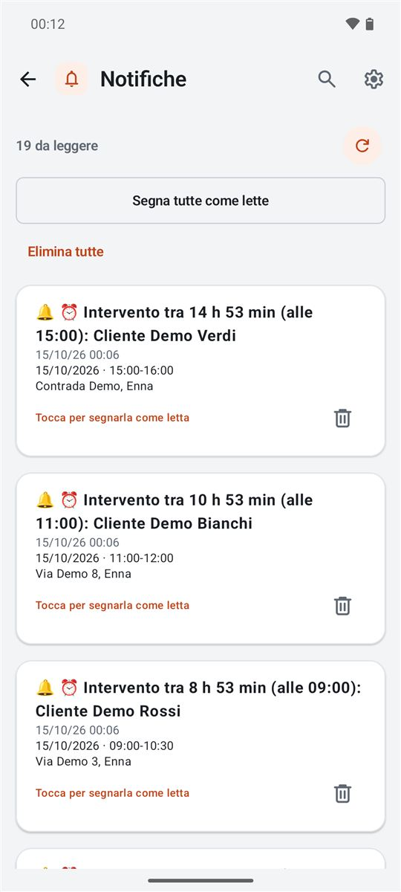
7. Le CPE del tuo magazzino
Se ti ho collegato a un magazzino, l'app conosce le CPE che hai in carico, con modello e MAC. Le scegli al passo 1 (o sul tetto, in CPE di questo intervento) e l'elenco resta sul telefono, quindi funziona anche senza rete. Si aggiorna ogni volta che apri Oggi con Internet.
- Se l'opzione «può installare CPE non presenti nel suo magazzino» non è attiva sul tuo account, nelle nuove installazioni i campi MAC e seriale non ci sono proprio: la CPE si sceglie solo dal magazzino. Se il magazzino è vuoto, l'app te lo dice: chiedi all'ufficio di caricarne una.
- Se l'opzione è attiva, puoi anche scansionare una CPE fuori magazzino: l'app ti avvisa e l'installazione resta annotata.
Dalla console, in Il mio magazzino, vedi lo stesso elenco dal computer.
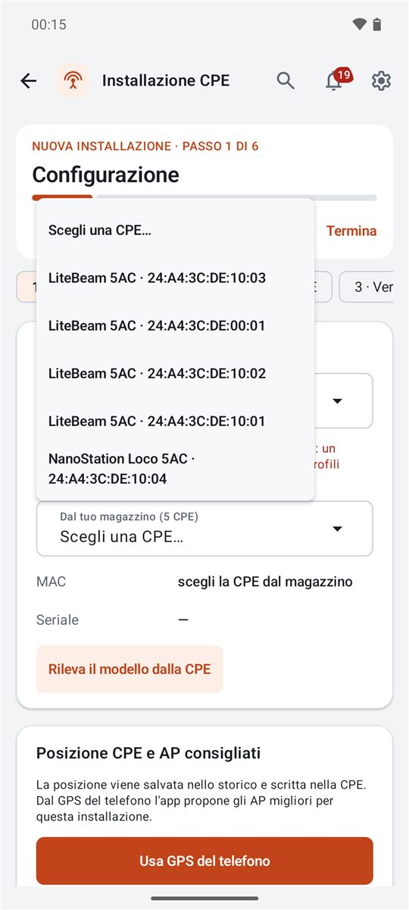
8. Strumenti di campo
CPE collegata
Tutto quello che fai con la CPE in mano, collegandoti una volta sola alla sua Wi-Fi (o a quella del router del cliente). La apri da Strumenti o dalle scorciatoie. Ci sono cinque schede:
- Diagnosi: per i guasti, ti dice in rosso cosa non va (non agganciata, PPPoE non attivo, cavo LAN, firmware, riavvii frequenti). Con Condividi rapporto mandi il riepilogo al NOC.
- Puntamento: lo stesso del passo 5.
- AP visibili: la scansione fatta dalla radio della CPE, con l'aggancio a un altro AP.
- Collaudo: misure, test Internet, foto e note.
- Firmware: porta la CPE alla versione richiesta (vedi sotto).
Se il telefono non è su nessuna Wi-Fi, ogni scheda ti propone Collegati alla Wi-Fi della CPE.
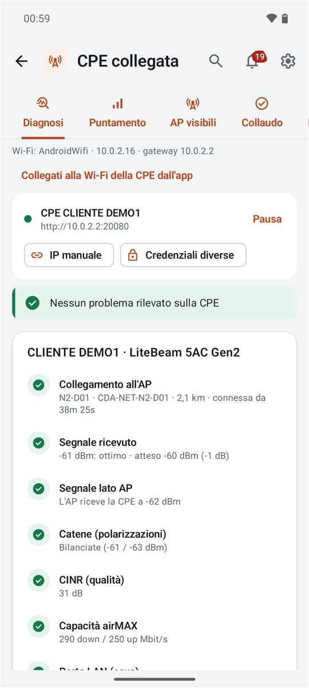
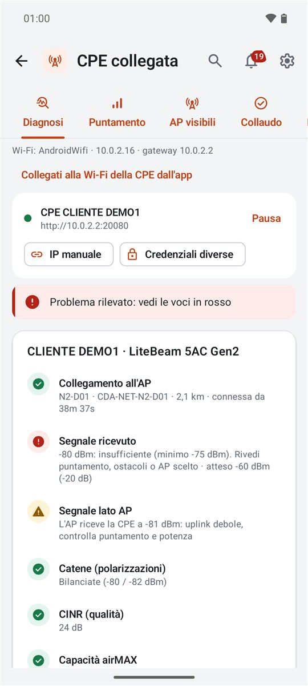
Verifica copertura
In Copertura, nella barra in basso. Serve a capire prima del sopralluogo se un indirizzo è coperto: scrivi l'indirizzo (o le coordinate, es. 37.59, 14.11) e tocca Cerca, usa Qui (GPS) oppure tocca un punto sulla mappa. Vedi gli AP in ordine di segnale stimato, con distanza, direzione e segnale atteso; da ognuno apri Mappa (che ti riporta sulla mappa con il riquadro dell'AP), Collegamento, Bussola o Realtà aumentata.
Nel Collegamento trovi puntamento, inclinazione, zona di Fresnel, capacità stimata, il profilo del terreno e il segnale atteso sulla scala delle modulazioni; scegli la CPE da installare e l'altezza, e tutto si ricalcola. La stima tiene conto delle colline tra l'indirizzo e l'AP e dell'altezza della CPE; edifici e alberi entrano dove sono stati scaricati, ma verificali sempre a vista. Ogni AP dice anche se la sera è libero, medio o carico: uno carico non viene mai consigliato come buono.
Vedi solo gli AP della tua zona, con una posizione approssimativa: se un indirizzo è servito da un AP che non è tuo, chiedi all'ufficio.
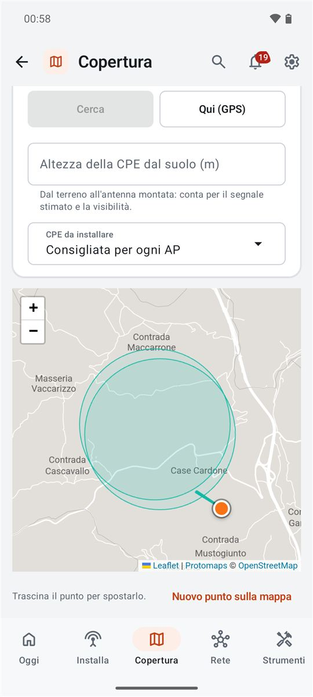
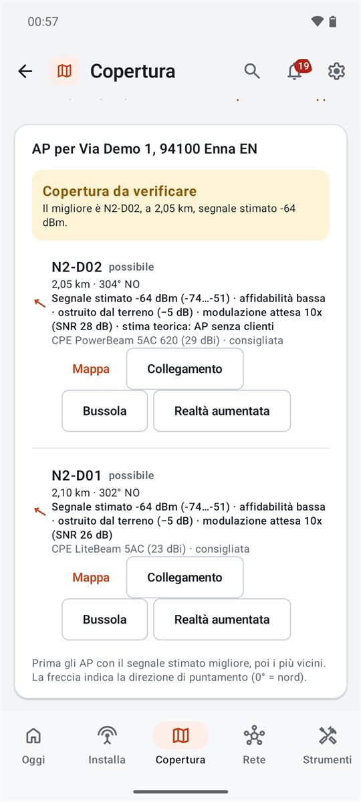
AP vicini
In Rete → AP vicini, sul posto: parti dal GPS del telefono. Vedi gli AP sulla mappa e in lista, con distanza, altitudine, azimut, tilt e segnale stimato, prima i buoni. Imposta l'altezza della CPE per un tilt preciso, oppure accendi Sono sul tetto e l'app la ricava dal GPS (se è abbastanza preciso). Da ogni AP apri Mirino, Bussola o Visibilità.
Senza rete: ogni ricerca riuscita resta sul telefono per 14 giorni, e quelle intorno agli interventi del giorno vengono scaricate in anticipo. Se sul tetto non c'è segnale l'app usa i dati salvati entro 400 m e te lo dice; la mappa invece vuole Internet, quindi usa lista, bussola e mirino.
Visibilità verso l'AP
Prima di salire, Visibilità disegna il profilo del terreno tra te e l'AP, la linea di vista e la zona che deve restare libera. Ti dice se la vista è libera, se il terreno entra nella zona di Fresnel o se è ostruita, e di quanto alzare il palo; se non basta nessun palo realistico, ti suggerisce un altro AP. Sono stime: controlla sempre a vista.
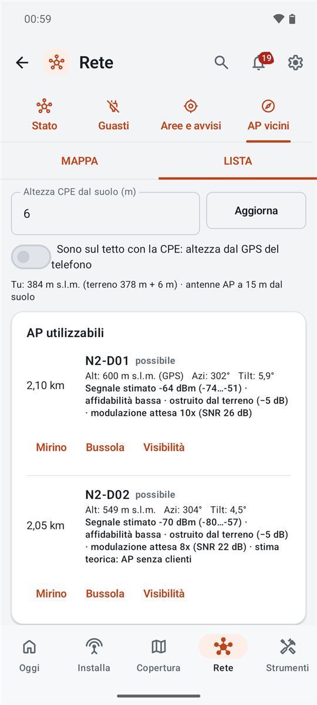
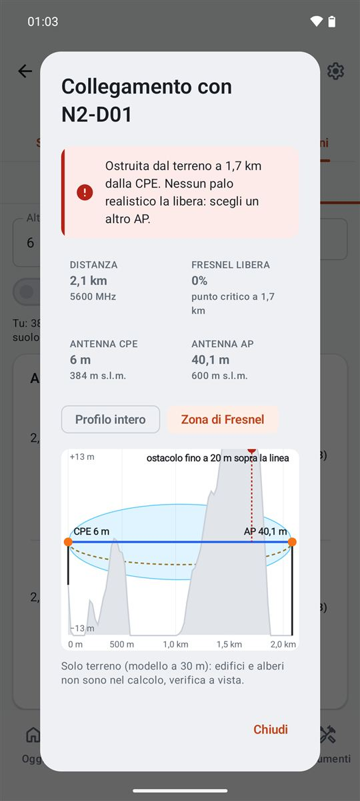
Firmware della CPE
La configurazione va scritta su CPE con il firmware richiesto. Di solito non devi fare niente: con Installa sulla CPE l'app aggiorna da sola la CPE, usando il firmware che ha già scaricato sul telefono quando eri online. Se ti serve farlo a mano:
- Con Internet, in CPE collegata → Firmware, scarica il firmware della piattaforma che usi;
- sulla Wi-Fi della CPE tocca Leggi la versione della CPE;
- tocca Aggiorna e conferma: la CPE si aggiorna e si riavvia da sola (3-5 minuti).
9. Stato rete e guasti Enel
In Rete ci sono quattro schede: Stato, Guasti, Aree e avvisi e AP vicini.
Stato: i POP e gli AP della tua zona, aggiornati ogni minuto: raggiungibili o no, AP con molte CPE offline e il simbolo ⚡ quando c'è un guasto Enel vicino. All'apertura vedi solo quelli con problemi; con Tutti li vedi tutti.
Guasti: le interruzioni della rete elettrica nelle tue zone, su mappa e in lista (media tensione in rosso, bassa in arancio, lavori programmati in grigio). Tocca una riga per ripristino previsto, POP/AP interessati, Sulla mappa e Navigatore.
Aree e avvisi
Le aree di interesse sono i posti che vuoi seguire anche fuori dalla tua zona: casa, una frazione, il paese di un cliente. Aggiungi un'area dal GPS o da un indirizzo con il raggio, e scegli gli avvisi: Guasti MT, Guasti BT, Lavori. Con l'interruttore la metti in pausa. Le stesse regole valgono per Telegram.
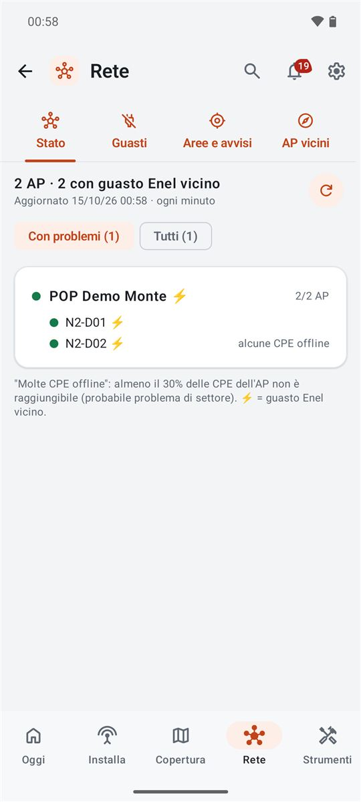
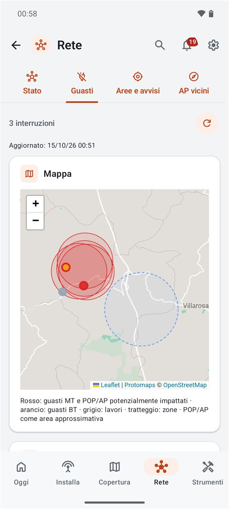
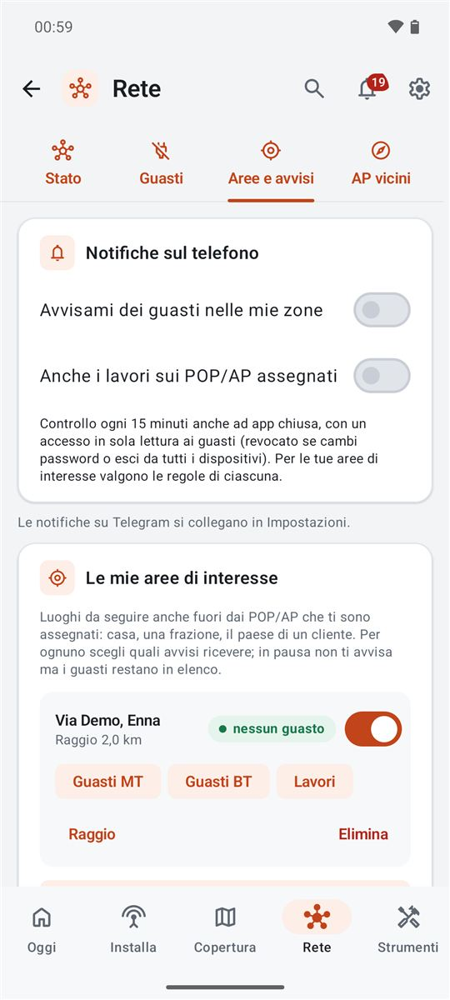
10. Strumenti di rete
In Strumenti, divisi per gruppi. Funzionano anche senza accesso al server (Continua senza accesso), sulla rete a cui è collegato il telefono:
| Strumento | A cosa serve |
|---|---|
| Scansione LAN | Host attivi, topologia, discovery e porte |
| Wi-Fi Analyzer | Reti, canali e segnale; Router del cliente ti dice che canale e larghezza impostare |
| Diagnostica di rete | Ping, traceroute, DNS, speed test, MTU, prova HTTP, Wake-on-LAN |
| Apparati in LAN | SNMP e telecamere: ONVIF, Hikvision, anteprima RTSP, calcolo della banda |
| MikroTik · RouterOS | Consultazione in sola lettura via SSH |
| Accesso remoto | SSH e Remote Desktop con app esterne |
Scansione LAN
Collegati alla Wi-Fi del cliente e apri Strumenti → Scansione LAN. Tocca Avvia scansione: il radar si riempie man mano che gli host rispondono. La scansione ha due fasi: prima trova gli host, poi costruisce la topologia; finché non compare COMPLETATA produttori e collegamenti si stanno ancora aggiornando. Le viste sono tre: Elenco (tocca un host per MAC, produttore, porte, Web, copia IP e MAC), Griglia IP (utile anche per trovare un indirizzo libero) e Topologia.
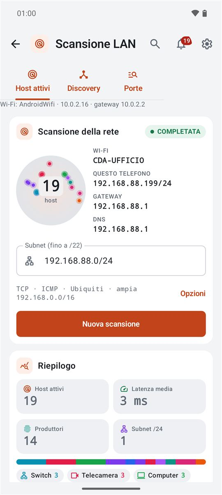
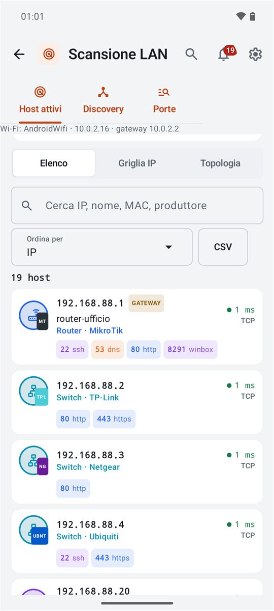
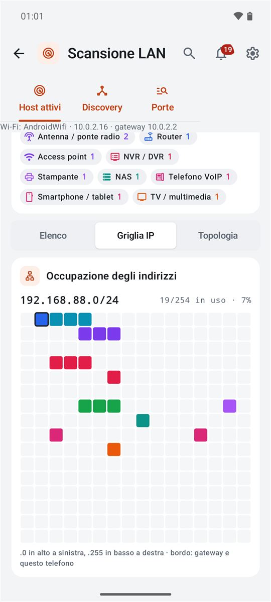
Topologia della rete
Si costruisce da sola a fine scansione: Internet in alto, poi gateway, switch e access point, e sotto i dispositivi. Linea piena: collegamento certo; tratteggio blu: wireless; linea sottile: dedotto dallo switch; puntini: presunto. Pizzica per lo zoom; a schermo intero tocca un dispositivo per i dettagli. PNG e PDF salvano la mappa in Download/CDA Net.
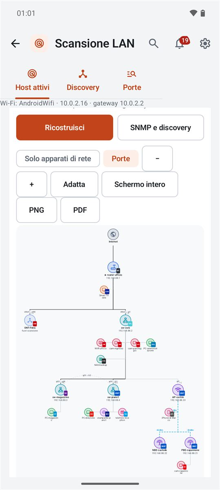
Discovery multi-vendor
Nella scheda Discovery, Avvia discovery interroga in pochi secondi i protocolli dei produttori (MikroTik, Ubiquiti, Hikvision, Dahua, ONVIF, WS-Discovery, UPnP, mDNS, Netgear). Ogni dispositivo risponde anche se ha l'IP di un'altra subnet: utile per trovare una telecamera o un'antenna con un indirizzo sbagliato. Se la Wi-Fi del cliente isola i client (rete ospiti) non risponde nessuno.
Porte
Nella scheda Porte scegli indirizzo e profilo (rapida, apparati di rete, TVCC/NVR, Windows/server…) o un elenco libero come 1-1024,8291. Vedi le porte aperte, chiuse e filtrate, con banner, header HTTP e certificato TLS delle aperte.
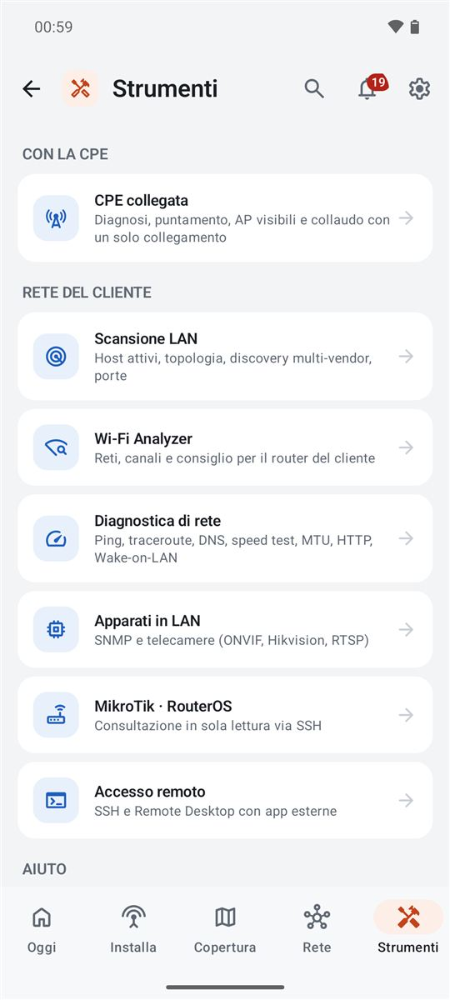
11. Impostazioni
Dall'ingranaggio: il tuo account, Esci (la prossima volta serve la password), Cambia password (almeno 12 caratteri), Accesso su questo telefono con Sblocco con impronta o volto, Notifiche su Telegram, Esci da tutti i dispositivi (se perdi il telefono) e l'indirizzo del server.
12. La console web
Dal computer apri l'indirizzo del server e accedi con lo stesso utente dell'app. Le CPE si configurano solo dall'app; la console serve per consultare, esportare e stampare.
| Voce | Cosa trovi |
|---|---|
| I miei interventi | Gli interventi dell'ufficio, in elenco o in Calendario (giorno, settimana, mese) |
| Storico provisioning | I tuoi provisioning con ricerca, filtri ed esportazione CSV; il collaudo con le foto |
| Le mie CPE | Lo stato delle tue CPE rispetto al collaudo |
| Il mio magazzino | Le CPE che hai in carico, con modello e MAC |
| Guasti Enel e Stato rete | I guasti nelle tue zone e lo stato dei tuoi POP e AP |
| Copertura | Gli AP consigliati per un indirizzo, con mappa e collegamento |
| Notifiche | Le stesse dell'app, con elimina e la scelta di cosa ricevere su Telegram |
| Il mio account | Password, verifica in due passaggi, sessioni, telefoni collegati |
13. Problemi frequenti
| Problema | Cosa fare |
|---|---|
| «Aggiornamento obbligatorio» | Lascia scaricare l'aggiornamento e installalo: senza, l'app non fa accedere. |
| Server non raggiungibile | Controlla dati mobili o Wi-Fi. Sulla Wi-Fi della CPE il server si raggiunge dalla rete mobile: se la rete mobile è spenta o non c'è, lavora offline. |
| «Nessun template airOS per …» | Quel modello non è ancora pronto: avvisami. |
| Configurazione scaduta | Sono passate più di 48 ore: torna online e rifai Prepara provisioning (gli interventi «pronto offline» si ripreparano da soli). |
| «Questa CPE non risulta nel tuo magazzino» | Scegli una CPE dal tuo magazzino. Se è davvero tua, chiedi all'ufficio di caricarla o di permetterti CPE fuori magazzino. |
| «Nessuna CPE nel tuo magazzino» | Il tuo magazzino è vuoto: chiedi all'ufficio di caricarne una. |
| Collegati alla Wi-Fi della CPE: non compare la CPE | Avvicinati e controlla che sia alimentata; se ha già la configurazione CDA Net la sua Wi-Fi di gestione può essere spenta: usa la Wi-Fi del router del cliente. |
| «Nessuna CPE airOS trovata» | Controlla di essere sulla Wi-Fi della CPE o del router del cliente; prova IP manuale. |
| La CPE rifiuta le credenziali | La CPE è stata configurata a mano: usa Credenziali diverse. |
| Segnale sotto −75 dBm | Rivedi il puntamento, cerca ostacoli, prova un altro AP o alza l'antenna. |
| Catene sbilanciate (oltre 6 dB) | Ostacolo, riflessione o tilt sbagliato: correggi il puntamento verticale. |
| Porta LAN a 100 Mbit/s o half duplex | Cavo o connettore danneggiato: rifai i plug o cambia cavo. |
| PPPoE non attivo | Controlla utente e password o lo stato dell'abbonamento con l'ufficio. |
| Collaudo in attesa di invio | Niente da fare: parte da solo appena c'è rete. |
| «C'è un problema tra i dati dell'intervento e la tua posizione» | Sei a più di 500 m dal cliente: controlla l'indirizzo, spostati all'aperto se il GPS è impreciso o chiedi all'ufficio di correggerlo. |
| Lo screenshot esce nero | Sul tuo account gli screenshot sono disattivati: se ti servono per lavoro, chiedimelo. |
| «Sessione scaduta» | Non hai usato l'app per 30 giorni o hai cambiato password: accedi di nuovo. |
14. Glossario
| CPE | L'antenna sul tetto del cliente. |
| AP | L'antenna del POP a cui si collegano le CPE di una zona. |
| POP | Il sito (traliccio) con uno o più AP. |
| Nodo, distretto, rilancio | Compongono l'SSID dell'AP: CDA-NET-N<nodo>-D<distretto>, con -R<n> per un rilancio. |
| dBm | Potenza del segnale: più vicino a zero è meglio (−58 è meglio di −70). |
| SNR / CINR | Quanto il segnale supera rumore e interferenze, in dB: più alto è meglio. |
| Catene | Le due polarizzazioni dell'antenna: devono ricevere valori simili. |
| Azimut / tilt | Direzione orizzontale (0° = nord) e inclinazione verticale verso l'AP. |
| PPPoE | L'accesso a Internet del cliente, con utente e password. |
| Collaudo | Misure finali, foto e note che certificano l'installazione. |
| Pronto offline | Intervento la cui configurazione è già sul telefono: si scrive anche senza rete. |